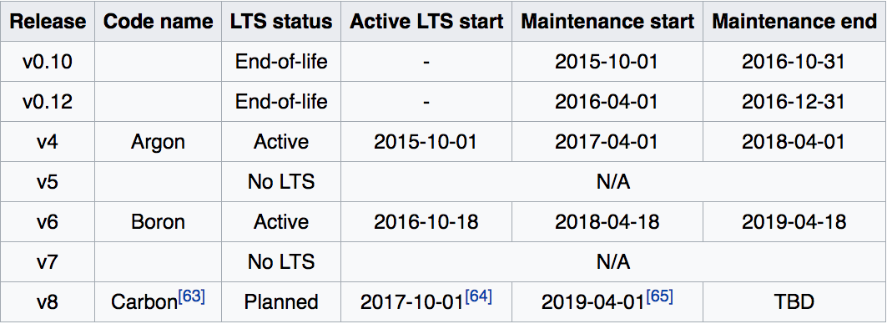

NodeJS
Created by Rajendrasinh Parmar / @RAJENDRASINH_09
Definition
Node.js is an open-source, cross-platform JavaScript run-time environment for executing JavaScript code server-side.
The rise of NodeJS
Node.js was made possible following Google’s release of its V8 JavaScript engine, which was developed as the JavaScript execution engine for the Chrome browser.
History
- Node.js was originally written by Ryan Dahl in 2009
- In January 2010, a package manager was introduced for the Node.js environment called npm
- In June 2011, Microsoft and Joyent implemented a native Windows version of Node.js.
- In September 2015, Node.js v4.0 was released, this brought V8 ES6 features into Node.js, and a long-term support release cycle.
Version History
Benefits of NodeJS
- Asynchronous I/O
- Language Javascript
- Community Driven
- The Fast Suite
- Go With Data Streaming
- Present Everywhere
- Real-Time Web Applications
- Easy On Coding
- Dynamic NPM
Installation
Go here if you don't have them installed.
How NodeJS works

Continue...

Basic example with NodeJS
var http = require("http");
http.createServer(function(request, response) {
response.writeHead(200, {"Content-Type": "text/plain"});
response.write("Hello World");
response.end();
}).listen(8888);NodeJS package manager
- Also Known as NPM
- An online repository for the publishing of open-source Node.js projects
- A commandline utility for:
- Interacting with repository
- Package installation
- Version management
- Dependency management
ExpressJs
Fast, unopinionated, minimalist web framework for Node.js
Installation
Create a directory to hold your application, and make that your working directory.
$ mkdir myapp
$ cd myappUse the npm init command to create a package.json file for your application.
$ npm initInstallation...
Now install Express in the myapp directory and save it in the dependencies list.
$ npm install express --saveTo install Express temporarily and not add it to the dependencies list
$ npm install express --no-saveCode Example using ExpressJs
write following code and save file with name app.js
//app.js
const express = require('express')
const app = express()
app.get('/', function (req, res) {
res.send('Hello World!')
})
app.listen(3000, function () {
console.log('Example app listening on port 3000!')
})Execution
Run the app with the following command:
$ node app.jsNow, load http://localhost:3000/
NodeJS Application structure
├── app.js
├── bin
│ └── www
├── package.json
├── public
│ ├── images
│ ├── javascripts
│ └── stylesheets
│ └── style.css
├── routes
│ ├── index.js
│ └── users.js
└── views
├── error.pug
├── index.pug
└── layout.pug